Design of Embedded Systems with RaspberryPI
Version 1.0
Version 1.0
Central Processing Unit
Extended Application Binary Interface
Enhanced Host Controller Interface
Graphical Processing Unit
Input and Output
Multimedia card
Flash memory type for fast sequential read and write
Operating system
Peripheral Component Interconnect – computer bus standard
Peripheral Component Interconnect Express
Universal Asynchronous Receiver Transmitter
Universal Serial Bus
This document describes the essential steps students have to follow to boot the Raspberry Pi with a Linux-based distribution such as Raspberry PI OS. After performing the operating system installation, the student must investigate the software tools installed and their potential. Finally, the student must implement a software application that measures 3D acceleration using a transducer. The following variants of application are proposed to the student:
Develop a simple console program developed in the C language.
(Optional) Develop an equivalent application using Python.
Note
[Time to complete the laboratory]: The time necessary to complete steps 1 to 3 in this tutorial is approximately 4 hours.
The following documentation has to be read and checked.
http://www.raspberrypi.org/help/ . This web contains some guides and documents covering a lot of topics
https://projects.raspberrypi.org/en . RPI application examples
http://www.python.org . Phyton resources, tutorial, and reference
Several Linux and Android distributions can be installed on the Raspberry Pi platform. These Operating System distributions also include multiple software applications and tools such as text editors, music players, video editing and playing, games, development tools, etc.
Follow the steps below to install the Raspbian Operating System:
Download the Raspberry PI Imager tool for your specific OS.
Execute the application, and a window will be displayed (see Fig. 2.1 ). First choose the Raspberry PI hardware (see Fig. 2.2 ) and then, choose the Operating System (see Fig. 2.3 ) and Storage options (CHOOSE STORAGE) to burn an SD card with the Raspberry PI OS 32 bits version. Click on the NEXT button and you will have the options (see Fig. 2.4 , Fig. 2.5 , Fig. 2.6 , Fig. 2.7 ) to apply your specific customization ( enable SSH , Username (rpi-student) and Password (rpi) , WIFI SSID and passkey, and your keyboard language configuration). Save the configuration and continue to write the micro SD Card.
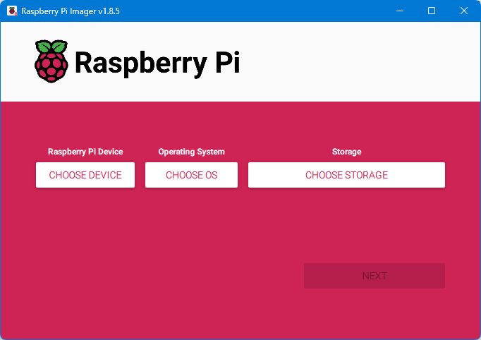
Raspberry Pi Imager main screen

Raspberry Pi Imager HW model

Raspberry Pi Imager OS selection
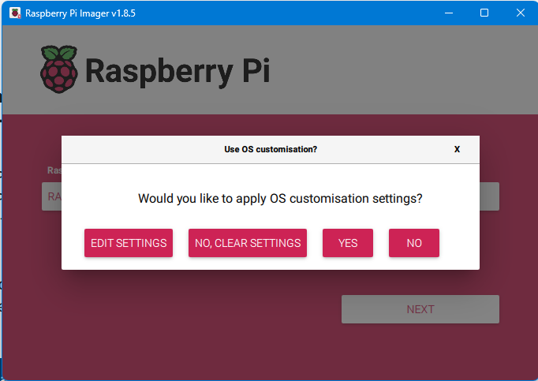
Raspberry Pi Imager Settings ( more info from RPI official documentation )
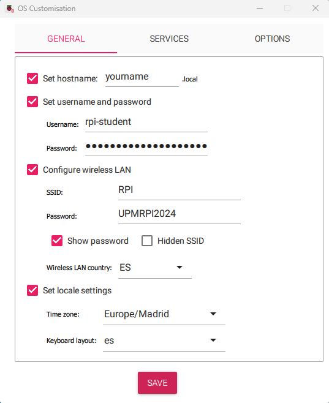
Raspberry Pi Imager General Settings
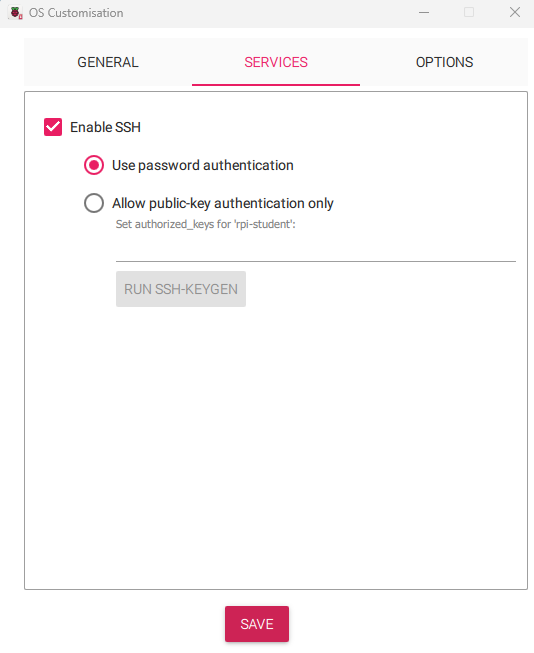
Raspberry Pi Imager OS Services
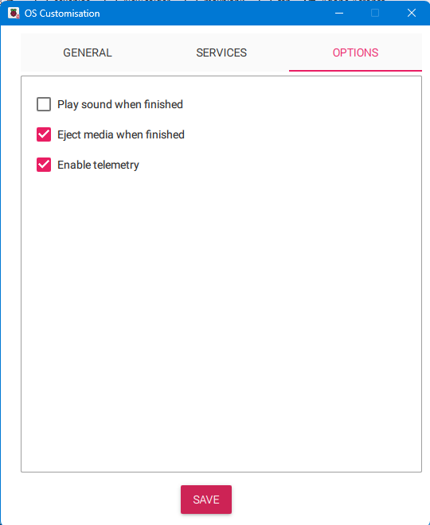
Raspberry Pi Imager OS Options
Warning
[VERY IMPORTANT]: Be careful in the destination device where the image is burned because this information is not recoverable
Wait until the program ends writing the SD Card (this can take up to one hour depending on your SD card category and model) .
We need to interact with the Raspberry Pi for the activities described in this document. There are three ways to establish this interaction:
The easiest one is connecting an HDMI monitor, a USB keyboard, and a USB mouse. This configuration allows us to use the Raspberry Pi as we would with a regular computer. Once the RPI is booted, we can set the WiFi connections and other settings such as enable the use of a serial line.
Opening an SSH session between your computer and the Raspberry Pi without connecting additional peripherals. This kind of configuration is known as headless start (use the rpi-student login).
Use the serial USB-TTL cable that you need to connect to the GPIO expansion connector. This requires first to enable the serial line in the Raspberry PI OS using the raspi-config tool. The connection of the USB-TTL cable is depicted in Fig. 2.8 .
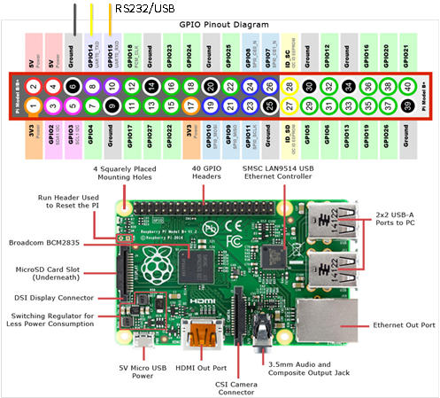
Detail of expansion connector highlighting the USB-TTL RS232
Plug in the SD card into the computer.
You should now see one new drive in the System Explorer (Windows)/Nautilus (Ubuntu) named “boot”. In Linux you will see two partitions mounted in your system. Open the partition/unit identified as “boot”.
Note
[VERY IMPORTANT]: This is the partition used by Raspberry to make the necessary hardware configuration before starting the operating system. Beware of not deleting or modifying files other than those described in this manual, or the Raspberry may not boot.
List the content of the boot partition (FAT32) and identify the files as in Fig. 2.9 (Ubuntu Linux).
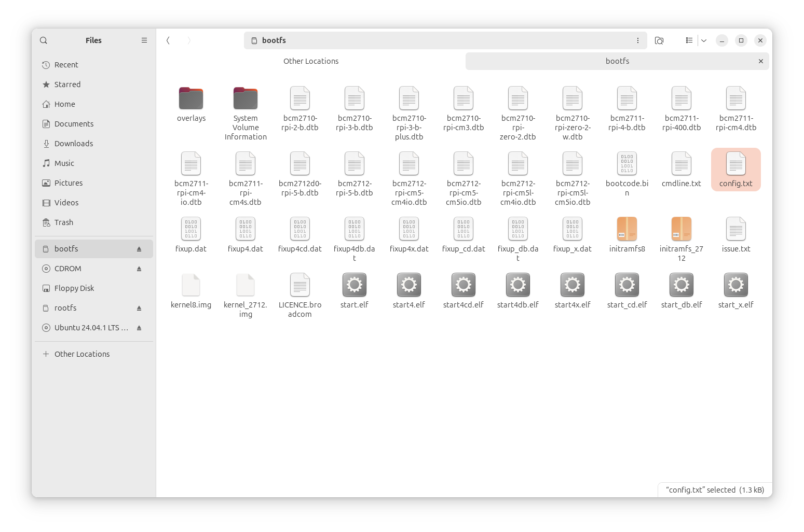
Files available in the FAT32 partition
Insert the SD card and connect the power supply and all other cables needed. The first time you boot your RPI you will see how the RPI is configured (this information is only displayed in the HDMI monitor) and rebooted. Wait 1 or 2 minutes (this depends again on your SD card category) until the RPI is completely booted.
Note
[Security]: Having the default user and password supposes a security issue, more if the SSH sessions are enabled. You can always change the password by executing the command passwd once logged in.
To open an SSH session from your computer to the Raspberry Pi you need to know its IP address. There are multiple ways to discover the Raspberry Pi IP address:
Use an IP Scanner utility , and scan in the range of your network. For example, you can quickly identify a Raspberry Pi as they use the hostname “raspberrypi.local” by default. This tool cannot be used at the UPM lab.
If you know your Raspberry Pi MAC address, you can set the DHCP server to assign a static IP to the Raspberry Pi MAC. This is typically done in the router configuration. Please, consider that Ethernet and WiFi ports have different MAC addresses. In the laboratory, your Raspberry can have only a dynamically assigned IP in the WIFI network with SSID RPI (ask your instructor to verify the configuration).
You could open an RS232 serial connection in the Raspberry Pi GPIO ports and use the command line ( ifconfig command) to obtain the IP or set the desired IP and netmask.
You can update and upgrade the OS if you have an internet connection. Please, do not update the OS during the classes, as this operation will require some time. You can update the OS by running the following commands:
$ sudo apt update
$ sudo apt upgrade
The student must investigate functions and commands and implement a C program to get the following requirements:
Show the values of the 3-axis acceleration obtained from the MPU-6000 I2C sensor.
The measurement readings are shown every 3 seconds.
Analyses the problem of offsets in the values returned. Define and implement a method to get corrected values
Get stop the program if “CRTL-C” is typed.
For advanced students, the implementation of this exercise in Python is proposed. For this, you can use any of the multiple Python modules that gain access to I2C interface in the Raspberry Pi.
In Linux, C/c++ programs are compiled and linked using the “make” command. This command searches a “Makefile”. A “Makefile” is a text file with the necessary information to compile and link and must be in the same directory of myprogram.c . The result will be myprogram.o and myprogram (executable).
DEBUG= -O2 #Debugging Level
CC= gcc #Compiler command
INCLUDE= -I/usr/local/include #Include directory
CFLAGS= $(DEBUG) -Wall $(INCLUDE) -Winline #Compiler Flags
LDFLAGS= -L/usr/local/lib #Linker Flags
LIBS= -lpthread -lm #Libraries used if needed
SRC = myprogram.c
OBJ = $(SRC:.c=.o)
BIN = $(SRC:.c=)
$(BIN): $(OBJ)
@echo [link] $@
$(CC) -o $@ $< $(LDFLAGS) $(LIBS)
.c.o:
@echo [Compile] $<
$(CC) -c $(CFLAGS) $< -o $@
clean:
@rm -f $(OBJ) $(BIN)
Explain the content of the config.txt file in the FAT32 partition of the uSDCARD of your RPI
How the I2C interface is enabled? Is there any change in the config.txt file?
Could you describe the commands used to compile a C/C++ program in Linux?
What is a library? What is the difference between a static and a shared library?
Summarize the utility of the makefile file and the make command.
What is the preferred utility to debug a C program in Linux?
How can you obtain the serial number of your Raspberry Pi? Is there any relation between the serial number and the MAC address?
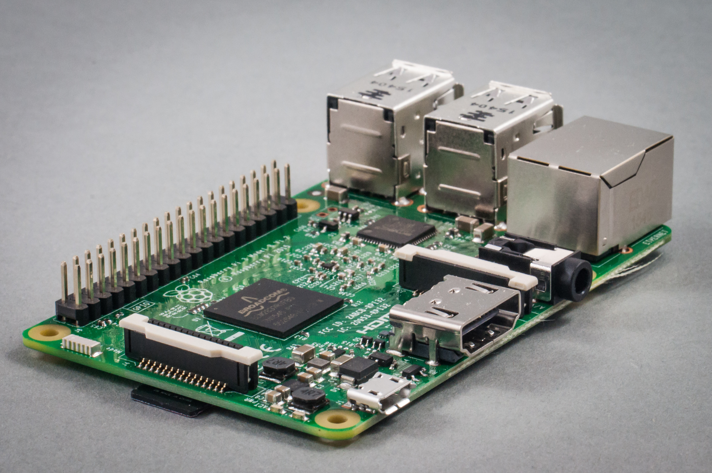
Embedded Linux Systems: Using Buildroot for building Embedded Linux Systems on Raspberry Pi 4 and 3 Model B by Mariano Ruiz is licensed under a Creative Commons Attribution-ShareAlike 4.0 International License .
This document describes the steps to develop an embedded Linux-based system using the Raspberry PI board. The document has been specifically written to use a Raspberry PI development system based on the BCM2837 processor. All the software elements used have a GPL license.
Note
The time necessary to complete all the tutorial steps is approximately 8 hours.
Read all the instructions carefully before executing the practical part; Otherwise, you will find errors, which are probably unpredicted. In parallel, you need to review the slides available at the Moodle site or at [RD1]
Embedded Linux system development. Slides
Mastering Embedded Linux Programming - Second Edition. Packt. https://www.packtpub.com/product/mastering-embedded-linux-programming-second-edition/9781787283282
Raspberry-Pi User Guide. Reference Manual.
www.myraspberry-pi.org/wp-content/…/Raspberry.Pi_.User_.Guide_.pdf
In order to execute this lab properly, you need the following elements:
The VMware player software version 17.6.1 or above. Available at Broadcom website (free download and use but you need to register). This software has already been installed on the laboratory desktop computer.
A VMWare virtual machine with Ubuntu 24.04 and all the software packages installed is already available on the Desktop. This virtual machine is available for your personal use. If you want to set up your virtual machine by yourself, follow the instructions provided in Annex I .
A Raspberry Pi, accessories and a USB cable are available at the laboratory.
Basic knowledge of Linux commands.
Start VMware Player and open the RPI Virtual Machine. Wait until the welcome screen is displayed (see Fig. 3.1 and Fig. 3.2 ). Login as “ ubuntu” user using the password “ubuntu”.
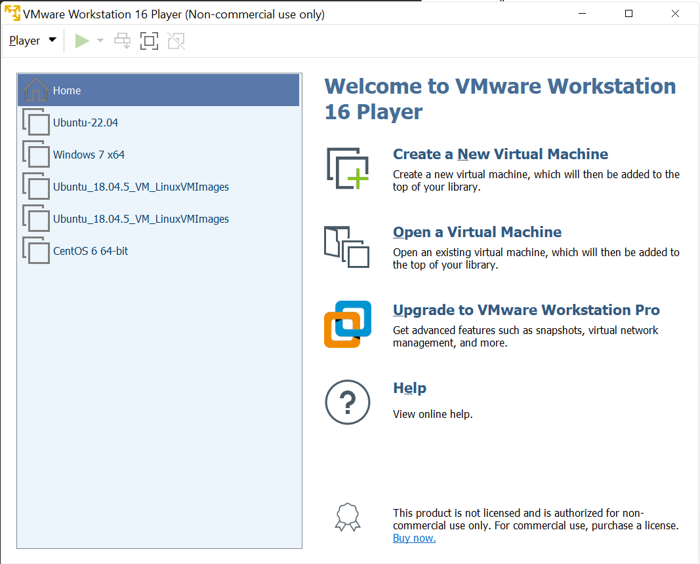
Main screen of VMware player with some VM available to be executed
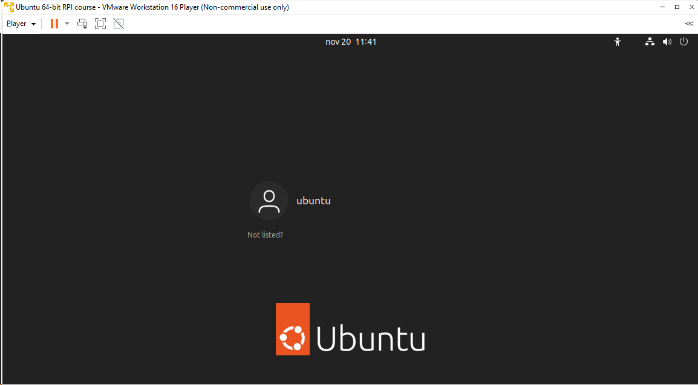
Ubuntu Virtual Machine login screen.
Open the Firefox web browser and download from https://buildroot.org/ , the version identified as buidlroot2024-08-1 (use the download link, see Fig. 3.3 , and navigate searching for earlier releases if necessary, https://buildroot.org/downloads/ ). Save the file to the Documents folder in your account ( Fig. 3.4 ).
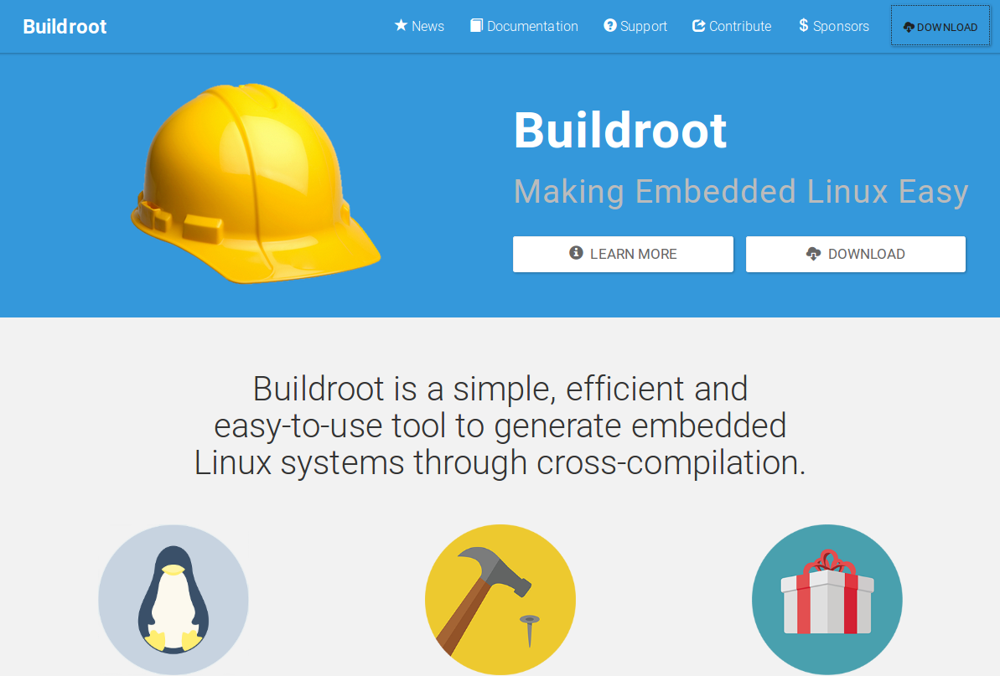
Buildroot home page.
Buildroot is a tool to generate embedded Linux systems in our PC, and then this Linux will be installed in the target.
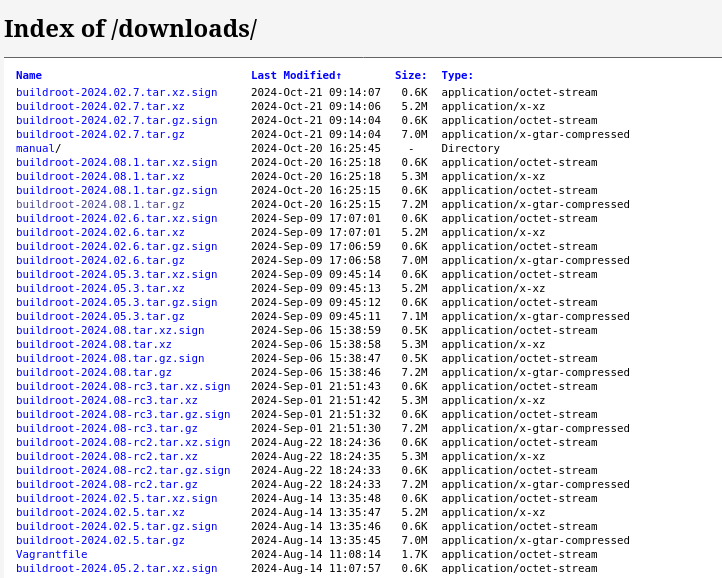
Example of Downloading Buildroot source code.
Create a folder “rpi” in “Documents”. Copy the file to the “Documents/rpi” folder and decompress the file ( Fig. 3.5 ).
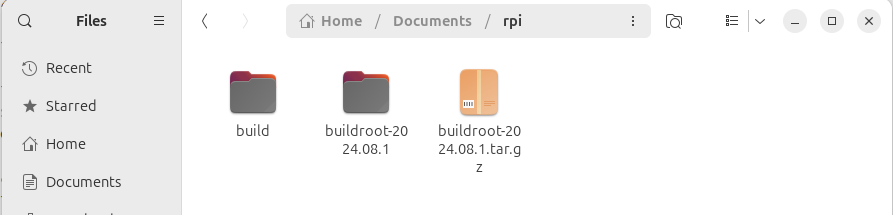
Buildroot folder (the folder name depends on the version downloaded).
Right-click in the window and execute “Open in Terminal” or execute the Terminal application from Dash home as shown in Fig. 3.6 (if “Open in Terminal” is not available, search how to install it in Ubuntu).
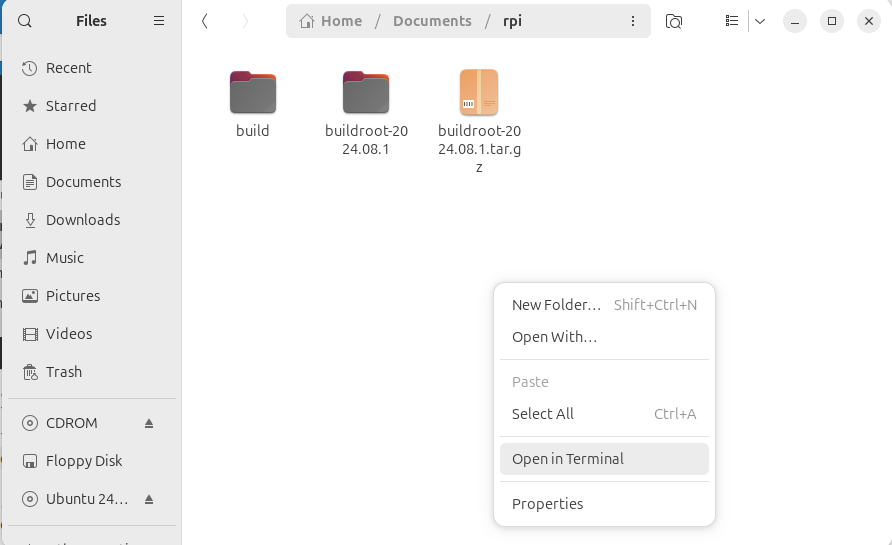
Terminal application
In some seconds, a command window is displayed. Then, execute these commands:
$ mkdir build
$ cd build
$ make O=$PWD -C /home/ubuntu/Documents/rpi/buildroot-2023.08.2/ menuconfig
Important
For this course, you will need to become familiar with the Linux Terminal use. On the Moodle site of this course, you can find a cheat sheet with the basic Linux commands.
Tip
In a Linux terminal, the “TAB” key helps you to autocomplete the commands, folders, and file names.
In some seconds, you will see a new window similar to Fig. 3.7 .
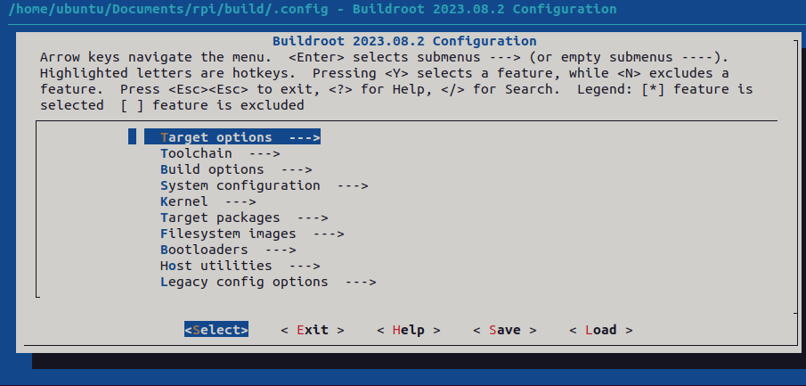
Buildroot setup screen.
Once the Buildroot configuration is started, it is necessary to configure the different items. You need to navigate the different menus and select the installation elements. Table I contains the specific configuration of Buildroot for installing it in the Raspberry Pi. Depending on the downloaded version, the organization and the items displayed can differ. If an item of buildroot configuration does not appear in the Table I leaves it with its default value.
Important
The Buildroot configuration is an iterative process. In order to set up your embedded Linux system, you will need to execute the configuration several times.
Warning
The tables have three colums. Check that you understnad all the content shown.
This is the selection of the processor to use ( Table 3.1 ).
|
Target Architecture |
AArch64 (little endian) |
ARM 64 bits |
|
Target Architecture Variants. |
Cortex-A72 |
|
|
Floating Point Strategy |
VFPv4 |
|
|
MMU Page Size |
4KB |
|
|
Target Binary Format |
ELF |
Cross Compiler, linker, and libraries to be built to compile our embedded application. Select the options shown in the following table ( Table 3.2 ).
|
Toolchain type |
Buildroot toolchain |
The Embedded Linux System will be compiled with tools integrated into Buildroot |
|
Custom toolchain vendor name. |
buildroot |
|
|
C library |
Library containing the typical C libraries used in Linux environments (stdlib, stdio, etc) |
glib |
|
Kernel Header Options |
6.6.x kernel headers |
|
|
Binutils Version |
2.41 |
Binutils contains tools to manage the binary files obtained in the compilation of the different applications |
|
GCC compiler Version |
gcc 13.x |
GCC tools version to be installed |
|
Enable C++ support |
Yes. |
Including support for C++ programming, compiling, and linking. |
|
Build cross gdb for the host |
Yes. |
Includes the support for GDB. |
|
Add Python support |
||
|
GDB debugger version |
gdb 14.x |
How Buidlroot will build the code. Leave the default values.
Here you can define the basic configuration of the embedded Linux to generate and specific scripts to add additional functionality ( Table 3.3 ).
|
Root FS skeleton |
Default target skeleton. |
Linux folder filesystem organization for skeleton the embedded system |
|
System hostname |
buildroot . |
Name of the embedded system |
|
System Banner |
Linux RPI 4 |
Banner. |
|
Passwords encoding |
sha 256 |
|
|
Init System |
Busybox |
|
|
/dev management |
Dynamic using devtmpfs + mdev |
|
|
Path to permissions for table |
system/device_table.txt |
|
|
Enable root login with password |
yes |
|
|
Root password |
rpi |
|
|
Busybox’ default shell |
/bin/sh |
|
|
Run a getty after boot |
tty PORT: console . Baudrate: keep kernel default. TERM environment variable: vt100 |
|
|
remount root filesystem read write during boot |
Yes |
|
|
Network interface to configure through DHCP |
eth0 |
|
|
Set the system’s default PATH |
/bin/sbin:/usr/bin:/usr/sbin |
|
|
Purge unwanted locales |
yes |
|
|
Leave the default values for all others |
||
|
Custom scripts to run path before creatating filesystem images |
your path /buildroot-2024.08.1/board/raspberrypi4-64/post-build.sh |
|
|
Custom scripts to run inside the fakeroot environment |
||
|
Custom scripts to run after creating filesystem images |
your path /buildroot-2024.08.1/board/raspberrypi4-64/post-image.sh |
This is the configuration of the Linux kernel. The specific location and version is specified among other parameters ( Table 3.4 ).
|
Kernel Version |
Custom tarball. |
$(call github,raspberrypi,linux,576cc10e1ed50a9eacffc7a05c796051d7343ea4)/linux-576cc10e1ed50a9eacffc7a05c796051d7343ea4.tar.gz |
|
Kernel configuration |
Using and intree defconfig file |
|
|
Defconfigname |
bcm2711 |
This file containst the specific configuration of the kernel for the RPI |
|
Kernel binary format |
Image |
|
|
Kernel compression format |
gzip compression |
|
|
Build aDevice Tree Blob (DTB) |
Yes |
|
|
Intree Device Tree Source file name |
broadcom/bcm2711-rpi-4-b broadcom/bcm2711-rpi-400 broadcom/bcm2711-rpi-cm4 broadcom/bcm2711-rpi-cm4s |
|
|
Need host OpenSSL |
Yes |
|
|
Linux kernel Extensions |
Nothing |
|
|
Linux Kernel Tools |
Nothing |
Target packages option allows to select the software elements that will be installed in the filesystem of the embedded Linux. Additionaly, this option install the busybox package that contains the basic Linux commands ( Table 3.5 ). Buildroot creates the filesystem hierarchy following the Linux standard organization.
|
Busybox |
yes |
|
|
Busybox configuration file to use |
package/busybox/busybox.config |
|
|
Show packages that are also provided by busybox |
Yes |
|
|
Audio and video applications |
Default values |
|
|
Compresssors and decompressors |
xz-utils |
|
|
Debugging, profiling and benchmark |
gdb, gdbserver, full debugger |
|
|
Developments tools |
Default values |
|
|
Filesystem and flash utilities |
Default values |
|
|
Games |
Default values |
|
|
Graphic libraries and applications (graphic/text) |
Default values |
|
|
Hardware handling |
Firmware>rpifirmware rpi4 (default) |
Path to a file stores as boot/config.txt path /board/raspberrypi4-64/config_4_64bit.txt |
|
Hardware handling |
Firmware>rpifirmware |
Path to a file stored as boot/cmdline.txt path /board/raspberrypi4-64/cmdline.txt |
|
Hardware handling |
Firmware>rpifirmware |
install DTB overlays |
|
Interpreters language and scripting Libraries |
Python3 |
|
|
Miscellaneous |
Default Values |
|
|
Libraries |
Default Values |
|
|
Networking applications |
ifupdown scripts openssh |
|
|
Package Managers |
Default values |
|
|
Real Time, Shell and utilities |
Default Values |
|
|
System Tools |
kmod, kmod utilities |
|
|
Text Editor and Viewers |
Default Values |
This option selects the format of the root filesystem and the size ( Table 3.6 ).
|
ext2/3/4 root filesystem |
ext4 |
|
|
filesystem label |
rootfs |
|
|
exact size |
400M Leave the other default values |
Update this value with your specific needs |
|
Compression method |
No compression |
The Raspberry PI does not need an specific bootloader becuase it is incorporated in the firmware provided by Broadcom.
Additional tools needed for ubuntu to create all the embedded images ( Table 3.7 ).
|
host environment setup |
Yes |
|
|
host genimage |
Yes |
|
|
host dosfstools |
Yes |
|
|
host kmod |
Yes, support xz-compressed modules |
|
|
host mtools |
Yes |
Once you have configured all the menus, you need to exit, saving the values (File->Quit).
In the Terminal Window executes the following command ( Listing 3.1 ):
$ make O=$PWD -C /home/ubuntu/Documents/rpi/buildroot-2023.08.2/
If everything is correct, you will see a final window similar to the one represented in Fig. 3.8 .
Warning
In this step, buildroot will connect, using the internet, to different repositories. After downloading the code, Buildroot will compile the applications and generate a lot of files and folders. Depending on your internet speed access and the configuration chosen, this step could take up to one hour and a half . If you have errors in the buildroot configuration, you could obtain errors in this compilation phase. Check your configuration correctly. Use “make O=$PWD -C /home/ubuntu/Documents/rpi/buildroot-2023.08.2/ clean” to clean up your partial compilation.
Note
dl subfolder in your buildroot folder contains all the packages downloaded for the internet. If you want to move your buildroot configuration from one computer to another, avoiding the copy of the virtual machine, you can copy this folder. |
Warning
If your building process fails different reasons could be the origin. consider to use the following actions. Make a copy of your .config file (hidden file in Linux) to save your configuration.
|
make O=$PWD -C /home/ubuntu/Documents/rpi/buildroot-2023.08.2/ clean |
Build again buildroot |
|
make O=$PWD -C /home/ubuntu/Documents/rpi/buildroot-2023.08.2/ distclean |
configure and build again buildroot |
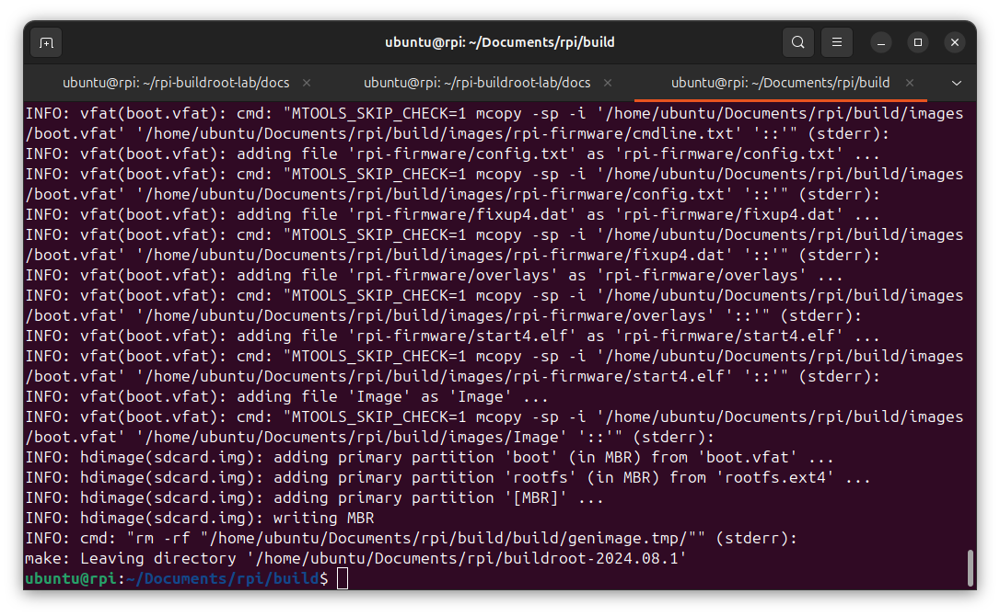
Successful compilation and installation of Buildroot
Buildroot has generated some folders with different files and subfolders containing the tools for generating your Embedded Linux System. The next paragraph explains the main outputs obtained,
The main output files of the execution of the previous steps can be located in the folder “build/images”. Fig. 3.9 summarizes the use of Buildroot . Buildroot generates a bootloader, a kernel image, and a file system.
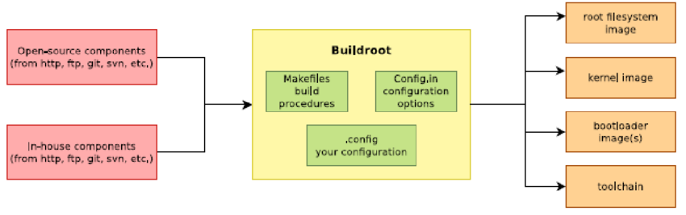
Schematic representation of the Buildroot tool. Buildroot generates the root file system, the kernel image, the bootloader, and the toolchain. Figure copied from “Bootlin” training materials ( http://bootlin.com/training/ )
In our specific case, the folder content is shown in Fig. 3.10
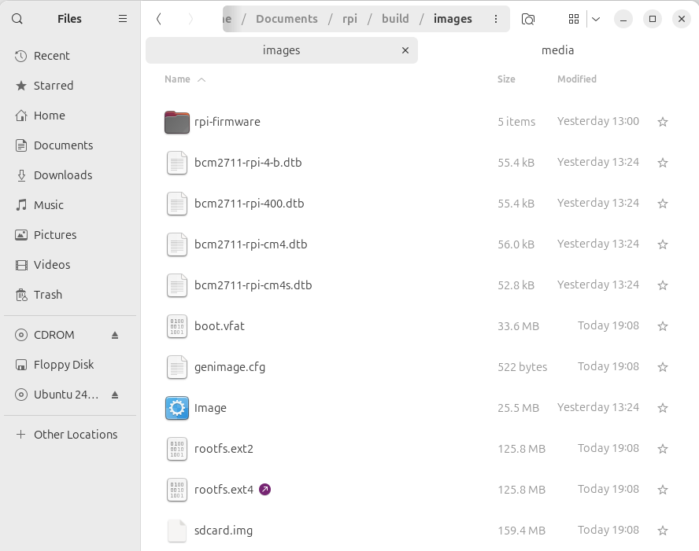
The images folder contains the binary files for our embedded system.
Copy the sdcard.img file to your SDcard using this Linux command in the Buildroot folder ( sdb is typically the device assigned to the sdcard, unless you have other removable devices connected to the system):
$ sudo dd if=./images/sdcard.img of=/dev/sd<x> bs=10M
Warning
<x> is the identification used by Linux for your microSD card, tipically “b” or “c”. Never use “a” because this is the operating system hardisk
Remember to format again the microSDcard if you need to repeat this process otherwise you will have errors when Linux in booting.
See also
Linux gparted is an excellent tool for partitioning and formatting the SD card.
Fig. 3.11 displays a Raspberry Pi. The description of this card, its functionalities, interfaces, and connectors are explained in the ref [RD2]. The fundamental connection requires:
To connect a USB to RS232 adapter (provided) to the raspberry-pi expansion header (see Fig. 3.12 , and Fig. 3.13 ). This adapter provides the serial line interface as a console in the Linux host operating system.
To connect the power supply with the micro-USB connector provided (5 v).
To connect the Ethernet cable to the RJ45 port if it is available (at home, not the case of UPM’s Lab).
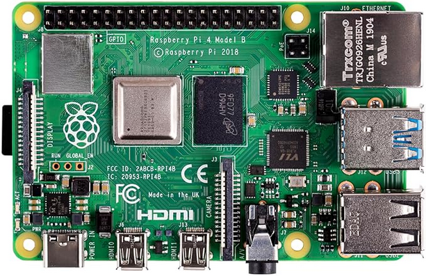
RaspBerry-Pi 4 Model B hardware with main elements identified
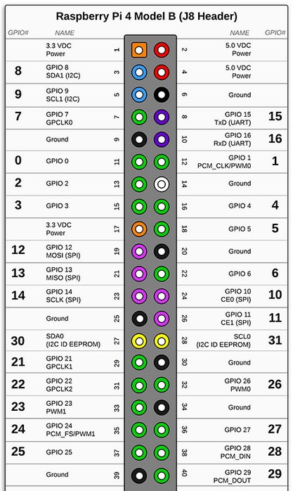
Raspberry-PI 4 header terminal identification.
Identification of the terminals in the USB-RS232 adapter
|
RPI connector |
FDTI Terminal |
|---|---|
|
RXD UART (GPIO16) Pin 10 |
Terminal 4 (Yellow) |
|
TXD UART (GPIO15) Pin 8 |
Terminal 5 (Orange) |
|
Ground (GND) Pin 6 |
Pin 1 |
The booting process of the Raspberry Pi BCM2711 BCM2711 processor is depicted in Fig. 14. Take into account that this System On Chip (SoC), the BCM2711, contains two different processors: a GPU and an ARM CPU. The programs bootcode.bin and start.elf are written explicitly for the GPU, and the source code is unavailable. Broadcom only provides details of this to customers who sign a commercial agreement. The last executable ( start.elf ) boots the ARM processor and allows the execution of ARM programs such as Linux OS kernel or other binaries such as u-boot bootloader.
Fig. 14: Booting process for BCM2711 processor in the raspberry-pi.
The config.txt file contains essential information to boot the Linux OS and perform the configuration of different hardware elements (look at http://elinux.org/RPiconfig and check the meaning of the different configuration parameters). Verify the content of the config.txt file generated by buildroot and complete it as depicted below ( Listing 3.2 ).
# Please note that this is only a sample, we recommend you to change it to fit
# your needs.# You should override this file using BR2_PACKAGE_RPI_FIRMWARE_CONFIG_FILE.
# See http://buildroot.org/manual.html#rootfs-custom
# and http://elinux.org/RPiconfig for a description of config.txt syntax
start_file=start4.elf
fixup_file=fixup4.dat
kernel=**Image**
# To use an external initramfs file
#initramfs rootfs.cpio.gz
# Disable overscan assuming the display supports displaying the full resolution
# If the text shown on the screen disappears off the edge, comment this out
disable_overscan=1
# How much memory in MB to assign to the GPU on Pi models having
# 256, 512 or 1024 MB total memory
gpu_mem_256=100
gpu_mem_512=100
gpu_mem_1024=100
# Enable UART0 for serial console on ttyAMA0
dtoverlay=miniuart-bt
# enable autoprobing of Bluetooth driver without need of hciattach/btattach
dtparam=krnbt=on
In this example, once the ARM is released from reset, it executes the Image application. This binary application is the Linux Kernel in Image format. The parameters passed to the application specified in the kernel=<….> are detailed in the cmdline.txt file. For instance, by default, Buildroot generates this one ( Listing 3.3 ):
root=/dev/mmcblk0p2 rootwait console=tty1 console=ttyAMA0,115200
In the Linux machine, open a Terminal and execute the program sudo putty with sudo rights (sudo putty), in a second a window appears. Configure the parameters using the information displayed in Fig. 3.14 (for the specific case of putty ), and then press “Open”. Apply the power to the Raspberry PI, and you will see the booting messages.
Tip
[Serial interface identification in Linux]: In Linux the serial devices are identified typically with the names /dev/ttyS0, /dev/ttyS1, etc. In the figure, the example has been checked with a serial port implemented with a USB-RS232 converter. This is the reason why the name is /dev/ttyUSB0 . In your computer, you need to find the identification of your serial port. Use Linux dmesg command to do this.
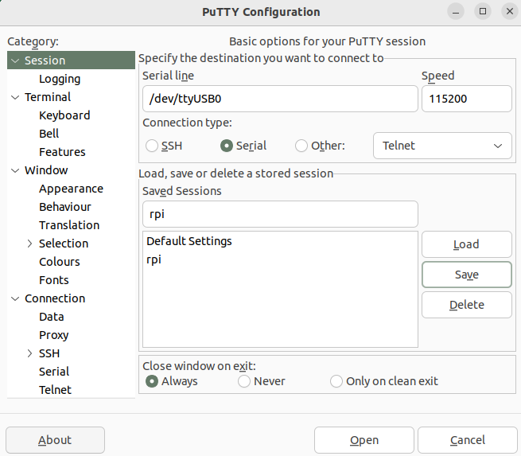
Putty program main window.
After a few seconds, you will see a lot of messages displayed on the terminal. Linux kernel is booting, and the operating system is running its configuration and initial daemons. If the system boots correctly, you will see an output like the one represented in Fig. 3.15 . Introduce the username root (password in case you have configured it), and the Linux shell will be available for you.
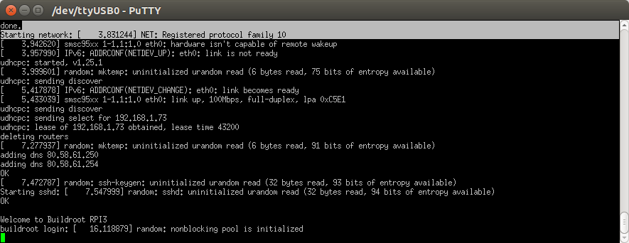
Linux Running in the RaspBerry Pi
Tip
[DHCP Server]: The DHCP server providing the IP address to the RPI should be active in your network. In the UPM ETSIST labs, there is no cabled network, only WIFI. If you are using the RPI at home, the DHCP server is running in your router. The method used to assing IP addresses is different from one manufactures to others. If you want to know the IP address assigned, you have two options: use a serial cable connected to the RPI ( ifconfig command) or check the router status web page and display the table of the DHCP clients connected. Looking for the MAC in the list, you will obtain the IP address.
Inspect the content of /etc/network/interfaces and /etc/init.d/S40network . You will see content similar to this in the interfaces file:
# interface file auto-generated by buildroot
auto lo
iface lo inet loopback
auto eth0
iface eth0 inet dhcp
pre-up /etc/network/nfs_check
wait-delay 15
hostname $(hostname)
This configuration activates the use of eth0 with DHCP support. Test the connectivity, trying to connect to another computer in the laboratory. Use the ping command.
Note
[Help]: If you run the ping command in the Raspberry trying to connect with a computer in the laboratory, you probably obtain a connection timeout. Consider that computers running Windows could have the firewall activated. You can also try to run the ping on a windows computer or on Linux virtual machine. In this case, the RPI does not have a firewall running, and the connection should be successful.
Question
What is the MAC address of your RPI interface? Use the dmesg command to see the kernel boot parameters and identify the method used to get the MAC address from the hardware.
The folder <buildroot-folder> /package/busybox contains two files named S10mdev and mdev.conf. These files have to be added to the target filesystem. This step is done by adding these commands to the <buildroot-folder>/board/raspberrypi4-64/post-build.sh script:
cp <buildroot-folder>/package/busybox/S10mdev ${TARGET_DIR}/etc/init.d/S10mdev
chmod 755 ${TARGET_DIR}/etc/init.d/S10mdev
cp <buildroot-folder>/package/busybox/mdev.conf ${TARGET_DIR}/etc/mdev.conf
Note
[mdev] mdev provides a method to add or remove hotplug devices in Linux.
The hardware element included in the RPI-3 for the Wireless communication is implemented with the BCM43438 chip. It is needed to include the software packages with the firmware’s chip and the wireless utilities.
Execute “make ……. menuconfig”. Navigate to “Target Packages->Hardware Handling->Firmware-> bcrmfmac-sdio-firmware-rpi” and select the “bcrmfmac-sdio-firmware-rpi-wifi”.
Before compiling Buildroot we need to add more software supporting the configuration of the WIFI.
Navigate to “Target Packages->Networking Applications” and select
“crda”
“ifupdown scripts”
“iw”
“wireless-regdb”
“wireless tools”
“wpa_supplicant”
“Enable EAP”
“Enable WPS”
“Install wpa_cli binary”
“Install wpa_client shared library”
“Instal wpa_passphrase binary”
Add these lines to ./board/rapsberrypi3-64/post-build.sh.
cp <buildroot-folder>/board/raspberrypi4-64/interfaces ${TARGET_DIR}/etc/network/interfaces
cp <buildroot-folder>/board/raspberrypi4-64/wpa_supplicant.conf ${TARGET_DIR}/etc/wpa_supplicant.conf
Create the file *<buildroot-folder>*/board/raspberrypi4-64/interfaces with the highlighted content:
auto lo
iface lo inet loopback
auto eth0
iface eth0 inet dhcp
pre-up /etc/network/nfs_check
wait-delay 15
hostname $(hostname)
auto wlan0
iface wlan0 inet dhcp
pre-up wpa_supplicant -B -iwlan0 -c/etc/wpa_supplicant.conf
post-down killall -q wpa_supplicant
wait-delay 15
Create the file *<buildroot-folder>*/board/raspberrypi4-64/wpa_supplicant.conf with this content (ask professors about the values to be provided as SSID and Key-passwd). You can define as many WIFIs as you want.
network={
ssid="SSID"
key_mgmt=WPA-PSK
psk="PASSWORD"
priority=9
}
Perform a *make* and burn again the new image in the micro SDcard. Boot the Raspberry and check that you can connect to the wireless network.
The Eclipse IDE CDT is installed in the virtual machine. You can execute it running eclipse in a window terminal.
How will a program be compiled and linked? Remember that we are developing cross applications. We are developing and compiling the code in a Linux x86_64 architecture, and we are executing it on an ARM one (see Fig. 17).
Fig. 17: Summary of the different configurations for developing applications for embedded systems. Figure copied from “Free Electrons” training materials ( http://free-electrons.com/training/ )
The first question is where the cross-compiler and other cross-tools are located. The answer is this: in the folder build/host/usr/bin . If you inspect this folder’s content, you can see the entire compiling, linking, and debugging tools (see Fig. 4.1 ). These programs are executed in your x86_64 computer, but they generate code for the ARM processor.
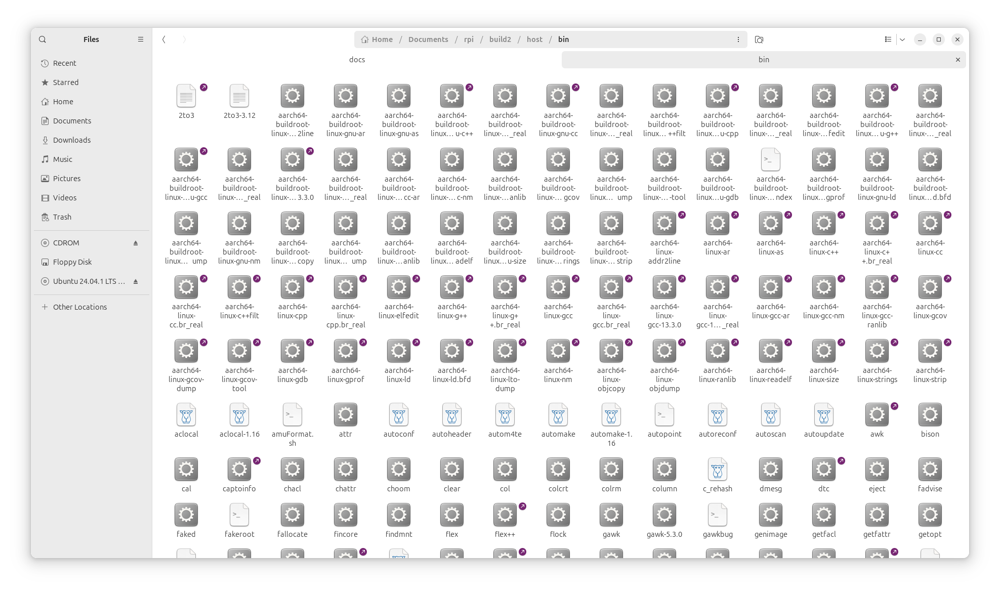
Cross-compiling tools installed in the host computer
In a Terminal window execute the following commands:
# change the directory to the folder where `build` directory is
$ cd ./build/host
$ source environment-setup
# run eclipse in the same terminal. In this case eclipse is available in your ubuntu user folder
$ /home/ubuntu/eclipse/cpp-2024-09/eclipse &
The environment-setup file contains the code listed below.
cat <<'EOF'
_ _ _ _ _
| |__ _ _(_) | __| |_ __ ___ ___ | |_
| '_ \| | | | | |/ _` | '__/ _ \ / _ \| __|
| |_) | |_| | | | (_| | | | (_) | (_) | |_
|_.__/ \__,_|_|_|\__,_|_| \___/ \___/ \__|
Making embedded Linux easy!
Some tips:
* PATH now contains the SDK utilities
* Standard autotools variables (CC, LD, CFLAGS) are exported
* Kernel compilation variables (ARCH, CROSS_COMPILE, KERNELDIR) are exported
* To configure do "./configure $CONFIGURE_FLAGS" or use
the "configure" alias
* To build CMake-based projects, use the "cmake" alias
EOF
if [ x"$BASH_VERSION" != x"" ] ; then
SDK_PATH=$(dirname $(realpath "${BASH_SOURCE[0]}"))
elif [ x"$ZSH_VERSION" != x"" ] ; then
SDK_PATH=$(dirname $(realpath $0))
else
echo "unsupported shell"
fi
export "AR=aarch64-buildroot-linux-gnu-gcc-ar"
export "AS=aarch64-buildroot-linux-gnu-as"
export "LD=aarch64-buildroot-linux-gnu-ld"
export "NM=aarch64-buildroot-linux-gnu-gcc-nm"
export "CC=aarch64-buildroot-linux-gnu-gcc"
export "GCC=aarch64-buildroot-linux-gnu-gcc"
export "CPP=aarch64-buildroot-linux-gnu-cpp"
export "CXX=aarch64-buildroot-linux-gnu-g++"
export "FC=aarch64-buildroot-linux-gnu-gfortran"
export "F77=aarch64-buildroot-linux-gnu-gfortran"
export "RANLIB=aarch64-buildroot-linux-gnu-gcc-ranlib"
export "READELF=aarch64-buildroot-linux-gnu-readelf"
export "STRIP=aarch64-buildroot-linux-gnu-strip"
export "OBJCOPY=aarch64-buildroot-linux-gnu-objcopy"
export "OBJDUMP=aarch64-buildroot-linux-gnu-objdump"
export "AR_FOR_BUILD=/usr/bin/ar"
export "AS_FOR_BUILD=/usr/bin/as"
export "CC_FOR_BUILD=/usr/bin/gcc"
export "GCC_FOR_BUILD=/usr/bin/gcc"
export "CXX_FOR_BUILD=/usr/bin/g++"
export "LD_FOR_BUILD=/usr/bin/ld"
export "CPPFLAGS_FOR_BUILD=-I$SDK_PATH/include"
export "CFLAGS_FOR_BUILD=-O2 -I$SDK_PATH/include"
export "CXXFLAGS_FOR_BUILD=-O2 -I$SDK_PATH/include"
export "LDFLAGS_FOR_BUILD=-L$SDK_PATH/lib -Wl,-rpath,$SDK_PATH/lib"
export "FCFLAGS_FOR_BUILD="
export "DEFAULT_ASSEMBLER=aarch64-buildroot-linux-gnu-as"
export "DEFAULT_LINKER=aarch64-buildroot-linux-gnu-ld"
export "CPPFLAGS=-D_LARGEFILE_SOURCE -D_LARGEFILE64_SOURCE -D_FILE_OFFSET_BITS=64"
export "CFLAGS=-D_LARGEFILE_SOURCE -D_LARGEFILE64_SOURCE -D_FILE_OFFSET_BITS=64 -Os -g0 -D_FORTIFY_SOURCE=1"
export "CXXFLAGS=-D_LARGEFILE_SOURCE -D_LARGEFILE64_SOURCE -D_FILE_OFFSET_BITS=64 -Os -g0 -D_FORTIFY_SOURCE=1"
export "LDFLAGS="
export "FCFLAGS= -Os -g0"
export "FFLAGS= -Os -g0"
export "PKG_CONFIG=pkg-config"
export "STAGING_DIR=$SDK_PATH/aarch64-buildroot-linux-gnu/sysroot"
export "INTLTOOL_PERL=/usr/bin/perl"
export "ARCH=arm64"
export "CROSS_COMPILE=aarch64-buildroot-linux-gnu-"
export "CONFIGURE_FLAGS=--target=aarch64-buildroot-linux-gnu --host=aarch64-buildroot-linux-gnu --build=x86_64-pc-linux-gnu --prefix=/usr --exec-prefix=/usr --sysconfdir=/etc --localstatedir=/var --program-prefix="
alias configure="./configure ${CONFIGURE_FLAGS}"
alias cmake="cmake -DCMAKE_TOOLCHAIN_FILE=$SDK_PATH/share/buildroot/toolchainfile.cmake -DCMAKE_INSTALL_PREFIX=/usr"
export "PATH=$SDK_PATH/bin:$SDK_PATH/sbin:$PATH"
export "KERNELDIR=/home/ubuntu/Documents/rpi/build/build/linux-custom/"
This script when is sourced in a terminal window sets all the environment variables needed to use the cross-compilation tools and adds the folder of cross-tools to the Linux PATH variable.
The execution of eclipse popups a window inviting you to enter the workspace (see Fig. 4.2 ). The workspace is the folder that contain eclipse projects created by the user. You can have as many workspaces as you want. Please specify a folder in your account.
Tip
The figures displayed in the following paragraphs can be different depending on the Eclipse version installed
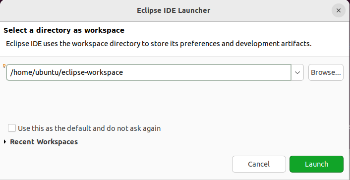
Selection of the workspace for Eclipse. Use a folder in your account.
Select Ok, and the welcome window of Eclipse will be shown ( see Fig. 4.3 ).Next, close the welcome window and the main eclipse window will be displayed ( see Fig. 4.4 ).
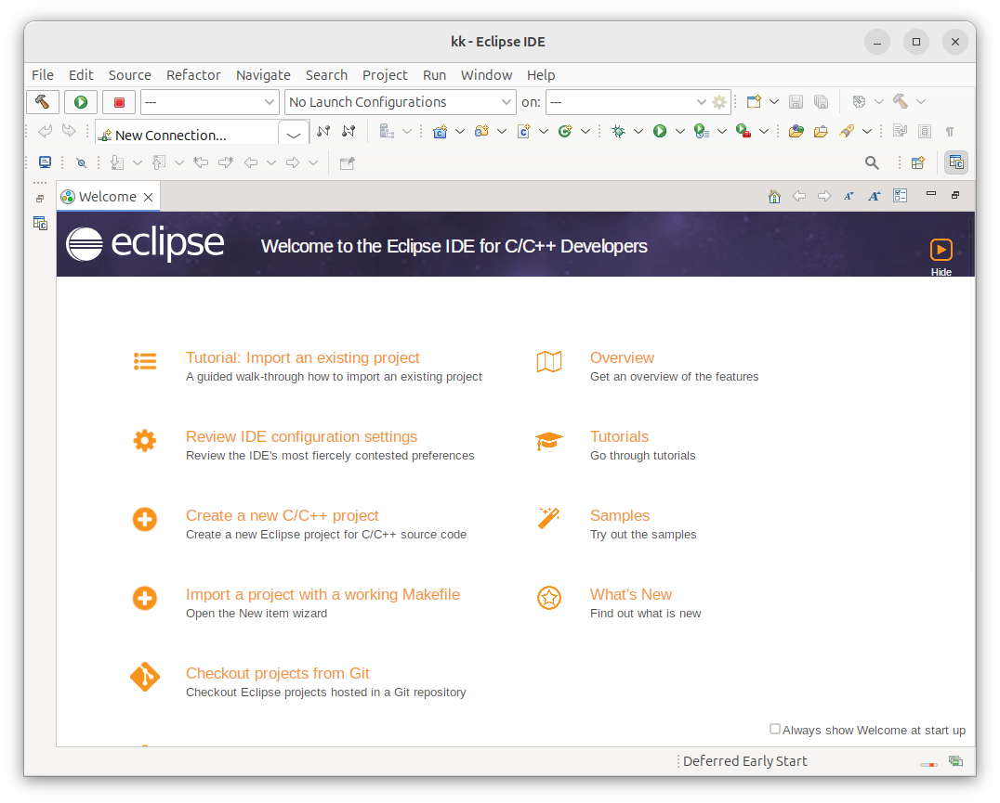
Eclipse welcome window.
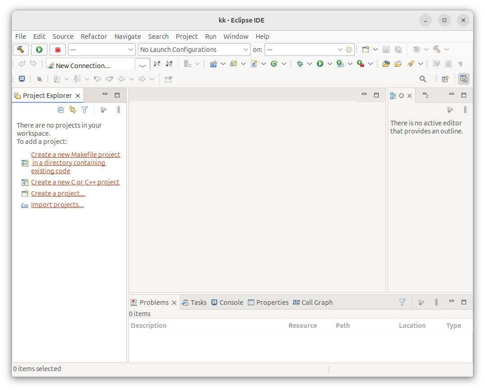
Eclipse main window.
In a terminal window create an empty folder. In this folder create the following files with the content described in Listing 4.1 , Listing 4.2 , Listing 4.3 , and Listing 4.4 . The Makefile uses the environment variables that are defined in the environment where the makefile is run.
1LIBS= -lpthread -lm #Libraries used if needed
2SRCS= main.cpp func.cpp
3BIN=app
4CFLAGS+= -g -O0
5OBJS=$(subst .cpp,.o,$(SRCS))
6all : $(BIN)
7$(BIN): $(OBJS)
8 @echo [link] $@
9 $(CXX) -o $@ $(OBJS) $(LDFLAGS) $(LIBS)
10%.o: %.cpp
11 @echo [Compile] $<
12 $(CXX) -c $(CFLAGS) $< -o $@
13clean:
14 @rm -f $(OBJS) $(BIN)
1#include "func.h"
2#include <iostream>
3int main(void){
4 int b=2;
5 std::cout<<"A is: "<< fun(b) << std::endl;
6}
1#ifndef __FUNC_H
2#define __FUNC_H
3 int fun(int);
4#endif
1int fun(int b){
2 int a=b*2;
3 return a;
4}
In Eclipse select in the left part of the windows Import projects . A new window is popup, select then C/C++ and the option Existing Code as Makefile Project . The window shown in Fig. 4.5 is displayed. Complete the name of the project, select the folder with the code and check Cross GCC in Toolchain for Indexer Settings .
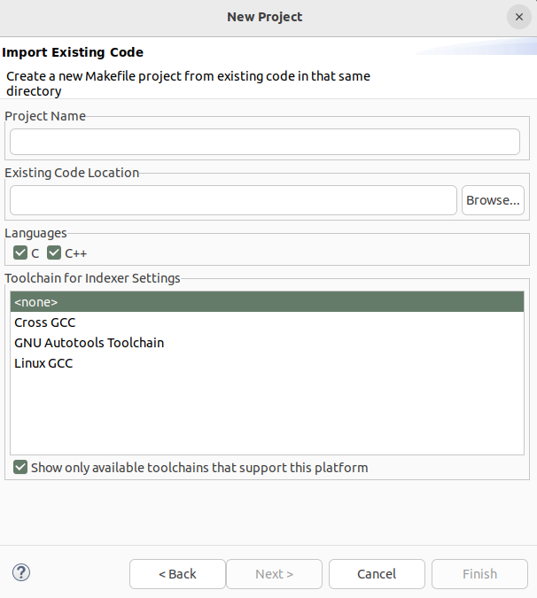
Importing the code.
Once you have configured the cross-chain in Eclipse you can build your project using Project->Build Project. If everything is correct, you will see the eclipse project as represented in Fig. 4.6 . You can clean the project (remove the executable and objects) with Clean .
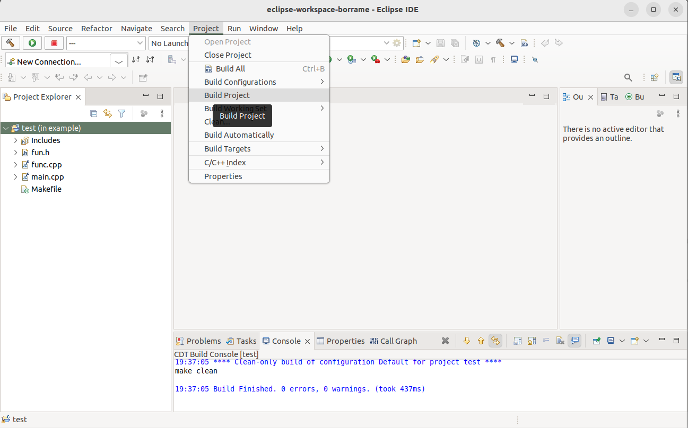
Eclipse project compiled (Binaries has been generated)
Note
[Console in Eclipse]: Have a look at the messages displayed in the Console. You will see how eclipse is calling the cross compiler with different parameters.
In order to copy the executable to the target, you have different options. You can use the Linux application called scp or other similar applications. In our case, we are going to use the “Other Locations….” utility included in the nautilus explorer ( Fig. 4.7 ). Specify in Server Address ssh://<ip address>
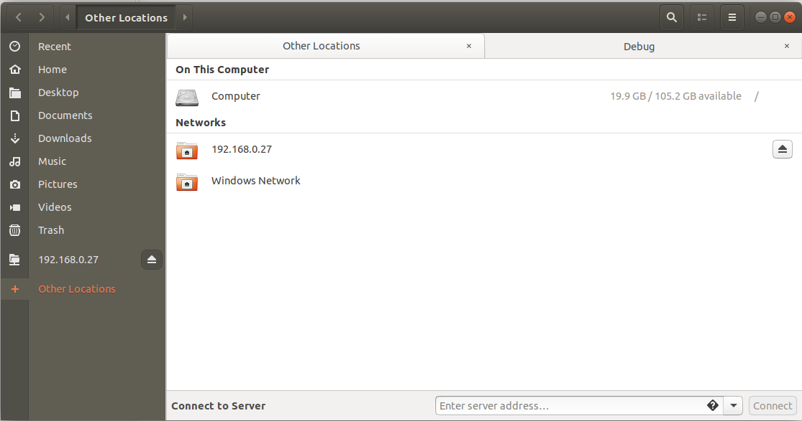
Connect to Server” option in Nautilus explorer
You can run the Raspberry PI program using putty (remember that once you have a network connection available in the RPI you can also use putty to connect to it).
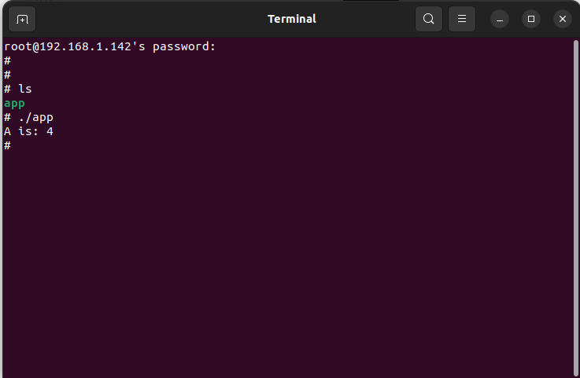
Run test program in Raspberry Pi
Warning
Warning. If you experiment problems using ssh, delete the .ssh folder in your home directory.
You can directly debug the program running in the RPI using Eclipse. There are two methods to do it: manually and automatically. In the manual method, firstly, you need to copy the executable program to the RPI, change the file permissions to “executable” and execute the program to be debugged using gdbserver utility. Of course, this is a time-consuming process and very inefficient. The alternative solution is to use automatic debugging. In order to debug your applications, we need to define a debug session and configure it. Firstly, Select Run->Debug Configurations and generate a new configuration under C/C++ Remote Application . You need to complete the different tabs available in this window. The first one is the main tab (see Fig. 33). You need to configure here the path to the C/C++ application to be debugged, the project name, the connection with the target (you will need to create a new one using the IP address of your RPI), the remote path where your executable file will be downloaded, and the mode for the debugging (Automatic Remote Debugging Launcher). Secondly, in the argument tab, you can specify the arguments of your executable program. It is very important here that you can also specify the working directory path where the executable will be copied and launched (you need to have rights in this folder).
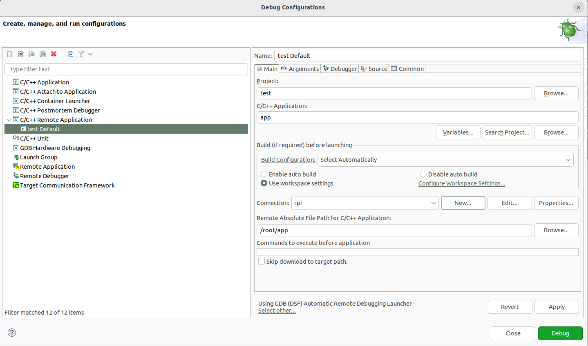
Creating a Debug Configuration
In the debugger window you need to configure the path of your cross gdb application. Remember that we are working with a cross-compiler, cross debugging. Therefore, you need to provide here the correct path of your gdb. The GDB command file (.gdbinit) must be specified, providing a path with an empty file. In the Gdbserver settings tab, you need to provide the path to the gdbserver in the target and the TCP/IP port used (by default 2345).
Debug configuration, including the path to locate the cross gdb tool.
Now, press Debug in Eclipse window, and you can debug your application remotely.
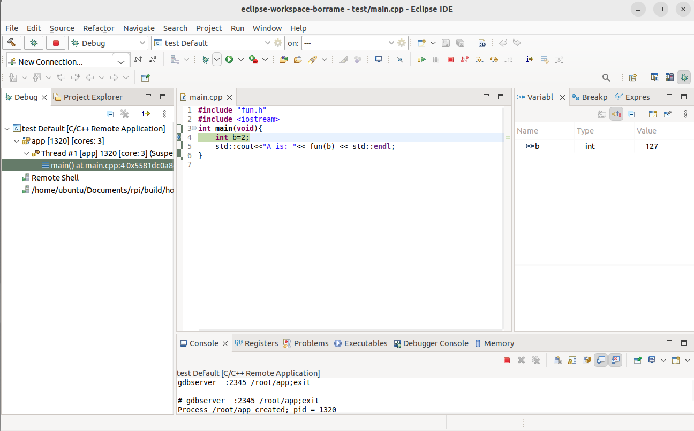
Debugging session on the RPI remotely
The software can be downloaded from this link . Follow the instructions to set up the application on your computer.
Note
It is mandatory to install Ubuntu 24.04.01 LTS version. Use this link to download it http://ftp.rediris.es/sites/releases.ubuntu.com/noble
The first step is to download Ubuntu. You will download an ISO image with this Linux operating System. Run WMware player and install Ubuntu using the VMWare player instructions. Select the Typical configuration and reserve at least 100G/150G for the hard disk. In the hardware configuration select 8GByte of RAM, if possible 4 processors, and the USB 3.1 support. The installation time will be half an hour, more or less, depending on your computer. Moving a virtual machine from one computer to another is a time-consuming task; therefore, take this into account to minimize the development time.
If you need to install software packages, you can do it using the linux terminal command apt-get . Another alternative process is the use of the synaptic utility. In order to use it, you need to install it using this command:
$ sudo apt-get install synaptic
Once installed, you can search and execute the synaptic program. When you click two times over the package, it will show all the dependent packages that would be installed (see Fig. 5.1 ).
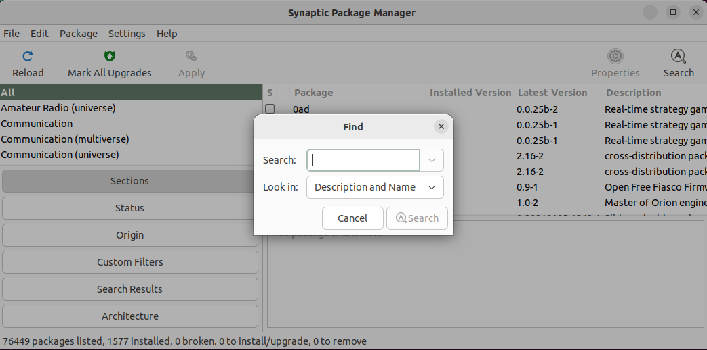
Synaptic window
You need to execute:
sudo apt-get install putty
Using buildroot requires some software packages that have to be installed in the VM. These are listed in this link http://buildroot.uclibc.org/downloads/manual/manual.html#requirement . You need to install at least:
build-essential
git
libncurses-dev
Follow the instructions of this link to install Eclipse. Use the Eclipse C/C++ or the Eclipse for Embedded C/C++ developers.
{kind=link}
{kind=link}
{kind=link}
{kind=link}
{kind=link}
{kind=link}
{kind=link}
{kind=link}
{kind=link}
{kind=link}
{kind=link}
{kind=link}
{kind=link}
{kind=link}
{kind=link}
{kind=link}
{kind=link}
{kind=link}
{kind=link}
{kind=link}
{kind=link}
{kind=link}
{kind=link}
{kind=link}
{kind=link}
{kind=link}
{kind=link}
{kind=link}
{kind=link}
{kind=link}
{kind=link}
{kind=link}
{kind=link}
{kind=link}